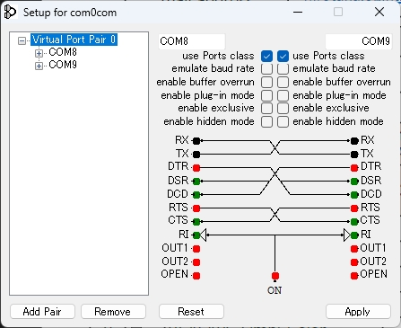

com0com は Windows 用の仮想 COM ポートペアドライバです。
一方のポートに書き込んだデータがもう一方から読み出せる「ヌルモデム」をソフトウェアで実現します。
SourceForge のプロジェクトページからインストーラをダウンロードしてください。
「com0com - Signed」（署名済み版）を選ぶと、Windows のテスト署名モードを有効にする必要がなく、そのままインストールできます。
スタートメニュー → com0com → Setup を起動します。
インストール直後は CNCA0 ↔ CNCB0 というペアが1つ作られています。
両ポートの 「use Ports class」 にチェックを入れます。
これにより Windows が自動で COM 番号を割り当て、TeraTerm・Python・C# など一般アプリが「普通の COM ポート」として認識できるようになります。

このページ下部の 「スケッチソース — HidBridgeTest」 からスケッチをダウンロードし、
Arduino IDE で UIAPduino に書き込みます。
Chrome または Edge で開いたこのページで、次の順に操作します。
TeraTerm・PuTTY・Python・C# など、シリアル通信ができるアプリで COM9（ペアの反対側）を開きます。
接続できたら、TeraTerm から文字を送信してみてください。
UIAPduino がエコーバックし、送った文字がそのまま返ってきます。
com0com でペアを作成し、ブリッジ側（例: COM8）をここで選択。外部アプリは反対側（例: COM9）を開いてください。
HID Input Report 8 bytes → Serial write /
Serial → 16 bytes バッファリング（30 ms タイムアウト付き）→ HID Feature Report (ID=0)
Monitor OFF にするとデータ表示を止め、ブリッジ処理に専念します。SYSTEM / ERROR ログは常時表示。
16 bytes 未満はゼロパディング。16 bytes 超過はエラー。
入力バイト列をそのまま Serial write。
書き込み手順: Arduino IDE でこのスケッチを開いて書き込む /
ボード: HID ProMicro CH32V003, Tools → USB: Keyboard+Mouse+WebHID
受信した Feature Report の内容をそのまま Input Report でエコーバックします。カウンター送信なし。
通信アプリ（TeraTerm 等）から COM9 に送ったデータが UIAPduino を経由してそのまま返ってきます。